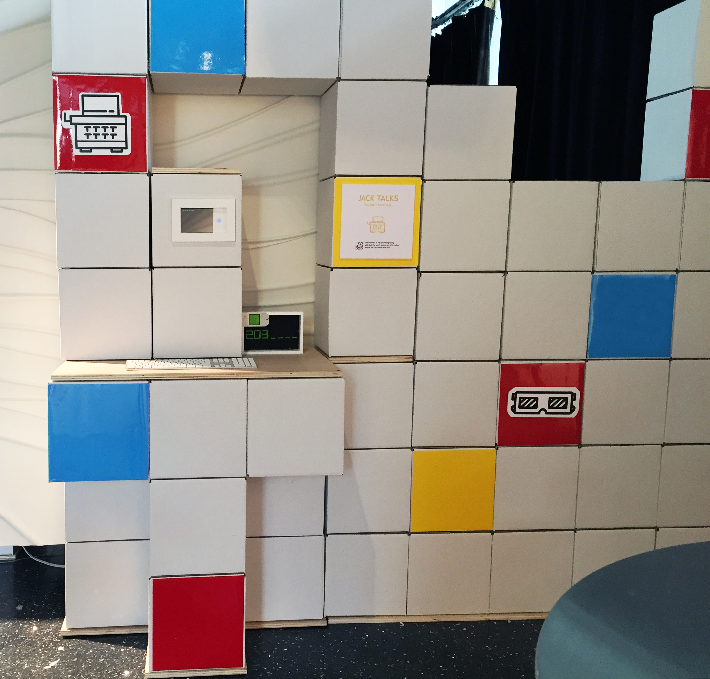
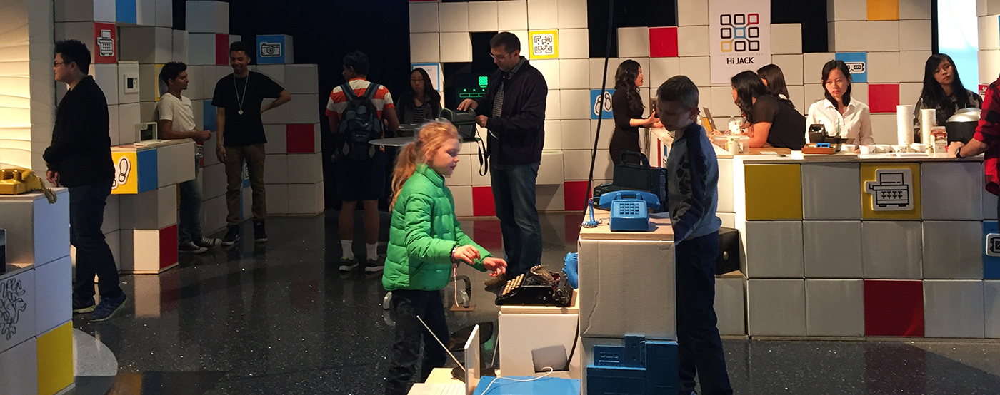
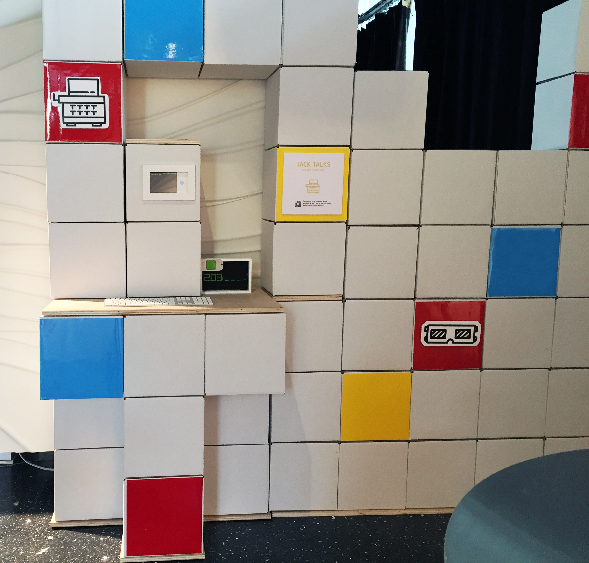
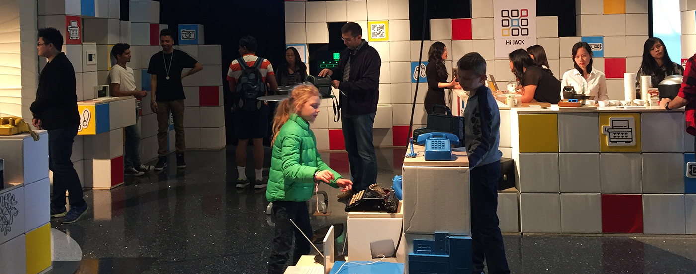

interactive environment
Hi-Jack was an immersive environment developed by the second year & post-graduate students of Interaction & Design & Development at George Brown College's School of Design. The installment was showcased at Toronto DigiFest 2016. This project was conceptualized, developed and created in a team environment and resulted in a bar that included multiple interactions in which users discovered the captivating narrative of Jack, the artificial intelligence. These interactions touched on the history of technology, promoted socialization, and encouraged users to observe and interact with their surroundings. My role was to develop the story connect each installation to the narrative. I was also involved in the production of the “Jack Talks” installation.

 


